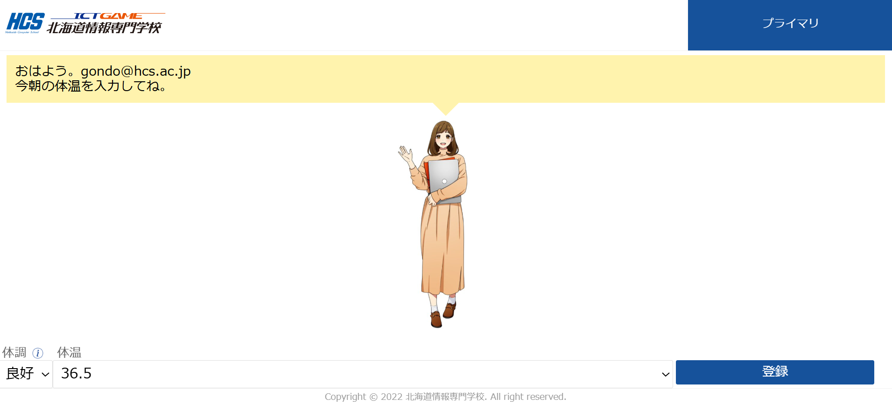

自己紹介
こんにちは。権藤 俊です。東京都在住のフルスタックエンジニアで、ReactとSpring Bootを用いたWebアプリ開発が得意です。趣味はサウナとピアノ演奏です。
技術スキル
React / JavaScript / TypeScript
HTML / CSS / Sass / Tailwind
Spring Boot / Java / REST API
MySQL / PostgreSQL / Firebase
Docker / Git / GitHub Actions
開発実績
Todo管理アプリ
ReactとSpring Bootを用いて作成したタスク管理アプリ。Firebase Authと連携して認証機能を実装。
チャットアプリ

WebSocketを使ったリアルタイムチャットアプリ。H2データベースと連携し、Spring Securityでログイン制御。
ブログ
Reactで簡単なWebアプリを作る方法
初心者向けにReactの基本構成を解説した記事。
Dockerで開発環境を整える
Docker Composeで複数サービスを一括構築する手順について。
連絡先（SNS）
以下のSNSからお気軽にご連絡ください。